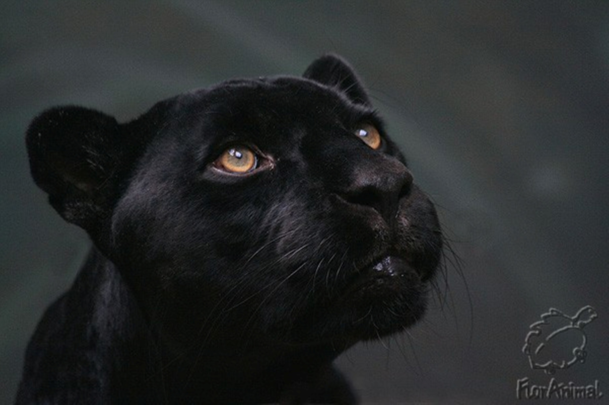
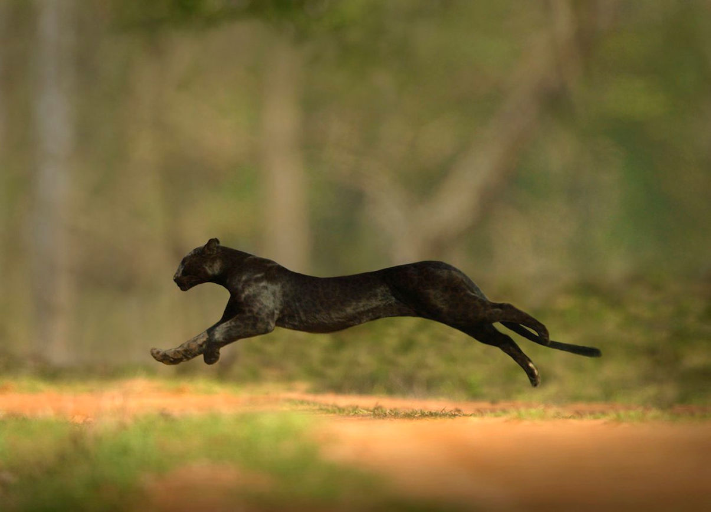

Пантеры
Панте́ры (лат. Panthera, от др.-греч. πάνθηρ [παντός — «самый из…» + θήρ — «зверь»]) — род крупных хищных млекопитающих из семейства кошачьих. Включает пять ныне живущих видов: ирбис (лат. Panthera uncia), тигр (лат. Panthera tigris), лев (лат. Panthera leo), леопард (лат. Panthera pardus) и ягуар (лат. Panthera onca), а также ряд ископаемых.
Размеры представителей рода крупные и очень крупные. К роду относится крупнейший представитель всего семейства кошачьих — амурский подвид тигра. Туловище вытянутое, иногда сильно. Крестцовая область не высокая, а линия спины не поднимается сзади, как у малых кошек, а идёт прямо. Высота в плечах (в холке) больше, чем в области крестца, при этом линия спины немного поката сзади. Хвост обычно длинный, на него приходится не менее половины длины тела, у некоторых видов немного больше. Голова относительно крупная или крупная, несколько вытянутая, с удлинённой лицевой частью. Уши маленькие, короткие, с закруглённой вершиной, без кисточки на конце. У самцов льва, а также у других видов в зимнем мехе они слабо выдаются из меха. Глаза с круглым зрачком. Иногда волосы на щеках удлинены и образуют так называемые баки, у льва в передней части тела самцов имеется развитая грива, а хвост имеет на конце кисточку из удлинённых волос. Ноги невысокие и толстые, сильные, с широкой лапой, особенно передней. Когти на лапах большие, острые и изогнутые, полностью втяжные. На концах пальцев по бокам от когтя имеется кожная складка, которая полностью скрывает втянутый коготь. Окраска одноцветная или с чёрными поперечными полосами или по основному светлому фону находятся чёрные пятна — одиночные или розеткообразные. Зубная система полная. Зубы очень сильные, клыки относительно коротки, но мощные, с широкой основной частью. Половой диморфизм у большинства видов выражается в более крупных размерах самцов. У льва самец отличается развитием гривы на передней части туловища.
Представители рода имеют особое строение гортани, позволяющее издавать рёв. В отличие от других кошачьих, у представителей рода подъязычный аппарат не полностью окостеневший — на месте одной из косточек в нём находится гибкая связка, позволяющая гортани раздуваться. Кроме того, их голосовые связки неразделённые и образуют трубчатую структуру, функционирующую как очень эффективное звукопроизводящее устройство. Благодаря особому строению подъязычного аппарата, гортань вместе с её голосовыми связками отличаются большой подвижностью, которая обеспечивает возможность издавать громкий грубый рёв.
Все представители рода — активные хищники, охотящиеся преимущественно на крупных млекопитающих, главным образом — копытных. Часто добыча превышает размеры охотника, порой в несколько раз. Охотятся скрадом и из засады (на тропах, у водопоев). Едят добычу преимущественно лёжа на брюхе и опираясь предплечьями и локтями на подлежащий субстрат, куски добычи отрывают рывком головы вверх. Преимущественно активны в тёмное время суток, хотя часто активны и днём. За исключением льва, являются одиночными животными. Лев отличается тем, что всегда держится и охотится небольшими стаями, называемыми прайдами. Обитают как в равнинных, так и на горных лесах, иногда на открытых безлесных горных массивах, тростниковых зарослях, один вид, лев, является обитателем открытых степей, саванн и полупустынь.
Котовиды

Тигр

Лев

Леопард

Ягуар